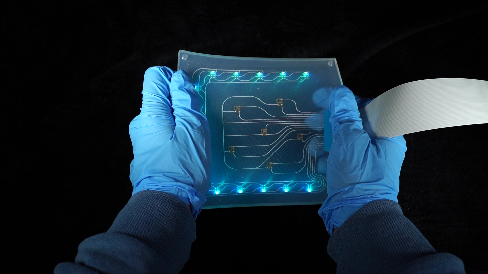
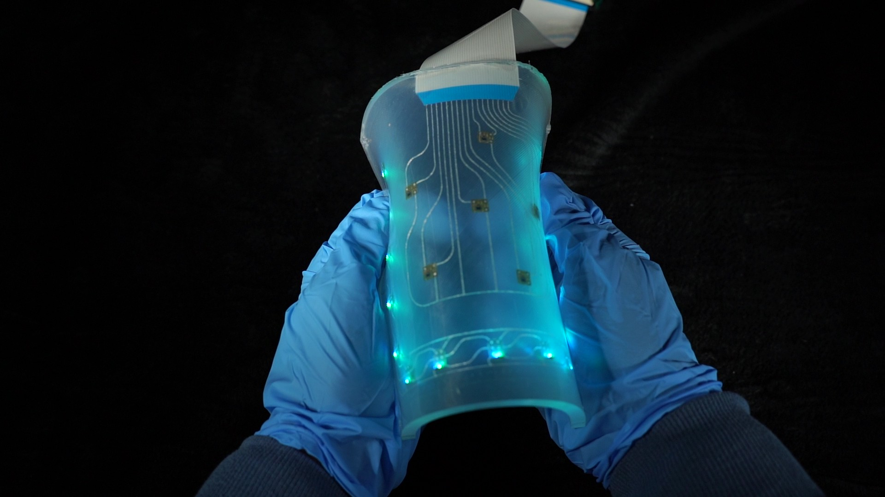
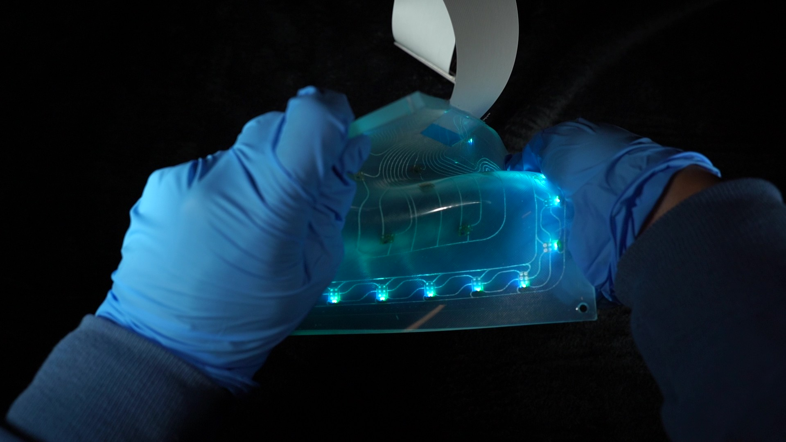
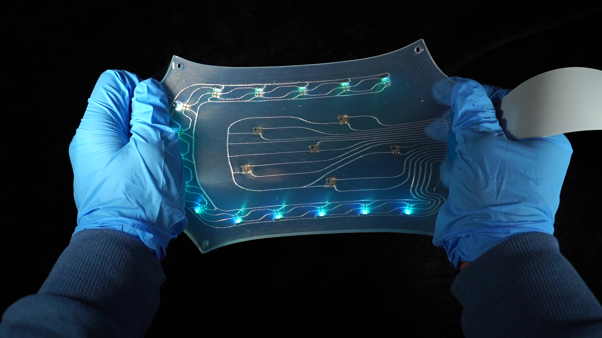

A membrane that reconstructs its own shape
Highly Deformable Proprioceptive Membrane
for Real-Time 3D Shape Reconstruction
Hybrid Dynamic Robotics Lab, Robotics Department, University of Michigan